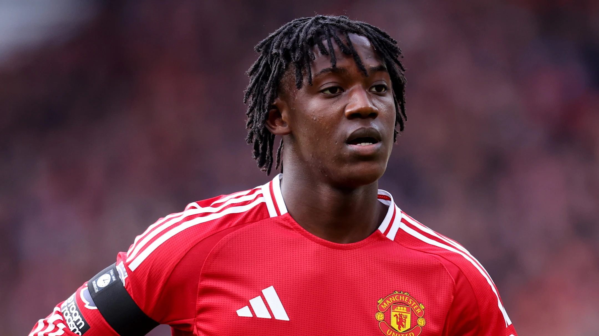

<article class="story-card compact">
    <a href="articles/kobbie-mainoo-loan-request-manchester-united-2025.html" class="story-link">
        <div class="story-image-wrapper">
            
            <div class="story-overlay">
                <span class="story-category breaking">🔴 TRANSFER NEWS</span>
            </div>
        </div>
        <div class="story-content-wrapper">
            <h2 class="story-headline">Kobbie Mainoo Loan Request: Manchester United Rejects Midfielder's Bid for Temporary Exit</h2>
            <p class="story-summary">Breaking: Kobbie Mainoo's loan request rejected by Manchester United. The 20-year-old England midfielder seeks temporary exit amid limited playing time under Ruben Amorim. Transfer deadline looms as speculation intensifies.</p>
            <div class="story-footer">
                <span class="story-date">📅 August 30, 2025</span>
                <span class="read-more">Read More →</span>
            </div>
        </div>
    </a>
</article>